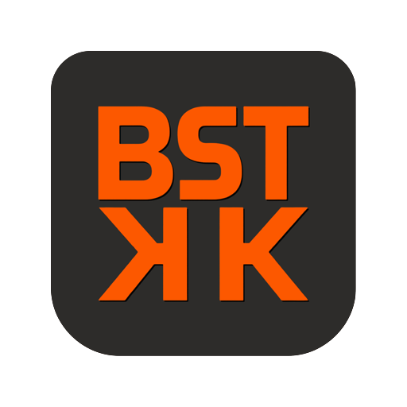
BeatStakk: The ultra-powerful pocket Groovebox to capture your inspiration...
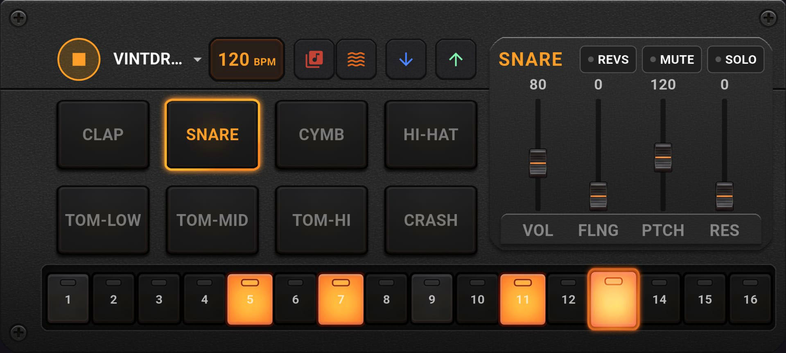
🥁 The Core Concept
BeatStakk was born from a simple idea: to have a robust pocket beatmaker without compromising on sound quality. More than just a sample player, it's a true Sound Design tool equipped with a mixer and effects worthy of professional plugins.
Imagine the legendary workflow of an Akai MPC crossed with the philosophy of a Teenage Engineering PO-33, all boosted by a powerful DSP engine.
Small, elegant, and highly effective, BeatStakk is aimed at both professionals looking to capture a fleeting idea on tour, and passionate amateurs. Its great stability makes it a reliable instrument for Live performances, or an ideal sketching tool before a studio session thanks to its multitrack export options. Moreover, it fosters community with its ultra-light proprietary format allowing you to share your compositions with other beatmakers in one click.
🏗️ Architecture and Technical Choices
Under the hood, the fluid interface developed in Flutter drives a true computational monster.
- C++ Audio Engine (Oboe): The digital signal processing (DSP) is coded in native C++. Massive polyphony, zero-latency SVF (State Variable Filters), peak limiters, and anti-click safeguards.
- Open Kit Format (
.beatstakk): You are not limited to factory sounds. The application loads external kits on the fly. A creation tool (a provided.batscript) allows any user to build their own kit in seconds from their audio files. - Ultra-Lightweight Project Format (
.bbx- BeatStakk Box): Your compositions (sequences, settings of the 12 filters per pad, tempo) are saved in this proprietary JSON format. It weighs a few kilobytes, making it instantly shareable via email, messaging, or Google Drive. - Studio Export (
.wav): The C++ engine allows rendering your loops into uncompressed high-quality WAV audio files, whether it's the full mix or track by track.
📖 Official Tutorial
Let's explore the interface step by step, from left to right on the main screen.
1. Startup and Playback (Play/Power)
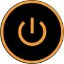
When launching the app, sounds are not yet loaded into RAM to save battery.
- Press the Power button. The C++ engine will extract and prepare the sounds.
- The button then turns into a Play/Stop button.
- At this point, you can already tap the pads to hear the raw samples, without processing.
2. Loading Kits
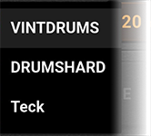
Just to the right, a dropdown menu allows you to browse through the Kits. By default, 3 Factory Kits are available.
When you change Kits, BeatStakk is smart and asks a crucial question via a dialog box:
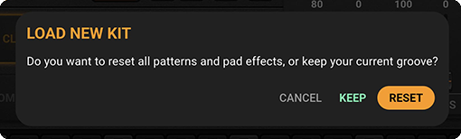
- [ KEEP ]: Keeps your rhythm (your patterns) and effects, and only replaces the instruments. Perfect for testing your groove with new sounds!
- [ RESET ]: Resets the app (empty patterns, reset effects) to start from a blank slate.
(Don't forget to press the Power button again to load the new kit into memory!)
3. Tempo (BPM)
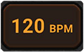
The BPM box indicates the tempo of your loop. Tap the number to bring up the numeric keypad and set a new speed (between 60 and 240 BPM).
4. Importing Your Own Kits (.beatstakk)
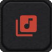
The red music icon allows you to import external sound banks.
How to create a kit for the community?
- Gather 8
.wavfiles in a folder. - Drop the free
BeatStakk_Kit_Maker.battool available here and on Google Drive. - Run the
.bat. It will ask for the name of the kit and your pads, then automatically generate a.beatstakkfile ready to be imported into the app!
5. Audio Export (WAV)
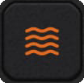
The wave icon allows you to export your current loop to audio.
- Full Mix: Tap directly to generate the global loop.
- Multitrack (Stems): If you activate the SOLO mode on a specific pad before exporting, BeatStakk will only export the audio of that pad with its effects (Delay, lingering Reverb included). Ideal for recreating the track track-by-track in a PC/Mac sequencer (Ableton, FL Studio).
6. Managing Projects (.bbx)
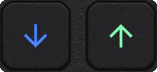
- Down Arrow (Blue): Loads an existing
.bbxproject from your phone. The app will automatically adjust the BPM, effects, and load the corresponding kit. - Up Arrow (Green): Saves your current state by creating a
.bbxfile. You will be prompted to name your composition. - Files can be saved on your phone, to your Drive, or shared directly via messaging apps.
7. Filters and Sound Design
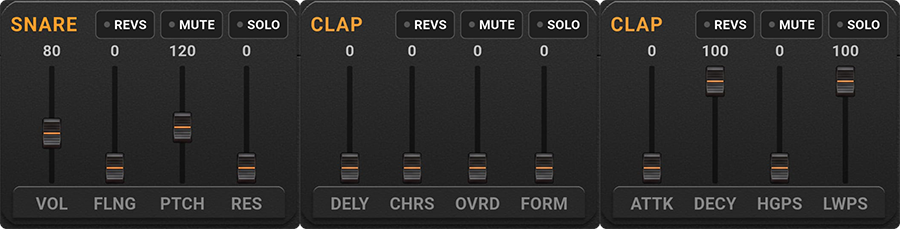
Each pad has its own channel strip with 12 parameters. You can navigate between 3 control pages by discreetly tapping at the very bottom of the faders area.
PAGE 1: The Essentials
- VOL: Volume (can go up to 200% to compensate for gain loss from filters).
- FLNG: Adds metallic coloration and saturation (Flanger/Distortion).
- PTCH (Pitch): Speeds up or slows down the sample (Varispeed vinyl style).
- RES (Resonance): Classic resonant filter to give a "Laser" vibe to the sound.
PAGE 2: Space
- DELY (Delay): Creates a rhythmic echo.
- CHRS (Chorus): Widens the sound by duplicating it.
- OVRD (Overdrive): Warm tape saturation with auto-makeup gain.
- FORM (Formant): Vocal-type filter that gives a human voice (A-E-I-O-U) to the sample.
PAGE 3: Sculpting (Envelopes and EQ)
- ATTK (Attack): Fades the sound in gradually.
- DECY (Decay): Shortens the sound to make it more percussive.
- HGPS (High-Pass): Cuts the lows to keep only the "click" or the "brightness".
- LWPS (Low-Pass): Muffles the sound ("underwater" effect). Filters are secured by a natural anti-click crossfade.
Performance Controls (Toggles)
- REVS: Plays the sample backwards (Reverse).
- MUTE: Mutes the pad's sound.
- SOLO: Mutes all other pads.
(Tip: These buttons are perfect for structuring your track during a Live performance!)
8. Pads and Sequencer
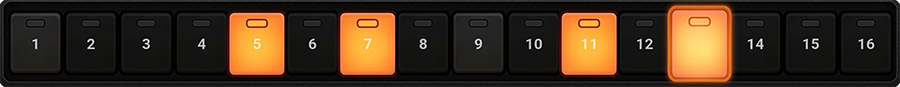
- The 8 Pads trigger manual playback (Finger Drumming). Touching a pad also selects its track.
- At the bottom, the 16 sequencer steps (Patterns) allow you to program the loop of the selected pad. The lights turn on as the playhead passes.
🎛️ A Classic Composition Flow
- Choose your color: Load a Kit.
- The design: Tap the snare pad. Lower the Decay to make it drier, add slight Pitch and Overdrive to make it snap.
- The Groove: Draw your notes on the 16 steps of the sequencer.
- The performance: Press Play. While listening to the loop, play with the Hi-hat's Low-Pass live to create build-ups. Play with the Mute buttons to drop the bass out, then bring it back suddenly (Drop).
- Saving: Save your project, or export the WAV file for your friends.
🎧 Practical Example
Try it yourself!
- Download the Jungle Kit: [Drive link to .beatstakk kit]
- Download this Demo Project: [Drive link to .bbx project]
- Import both into the app, press Play, and watch how the filters transcend the raw sounds!
- Load DRUMSHARD and choose KEEP. Experiment with your patterns directly using another kit.
This hybrid workflow, between immediate playability and surgical design, is what makes BeatStakk unique and incredibly addictive.
⚖️ Legal Disclaimer
The BeatStakk app is provided as a virtual hardware tool.
The included factory kits respect copyright laws, but Joyxt Corp is in no way responsible for the audio files (samples) that users import, use, or distribute via the .beatstakk format.
Make sure you own the rights or have permission (Royalty-Free) for the samples you use if you intend to commercialize your exported audio tracks. Piracy of copyrighted works is the sole responsibility of the end user.